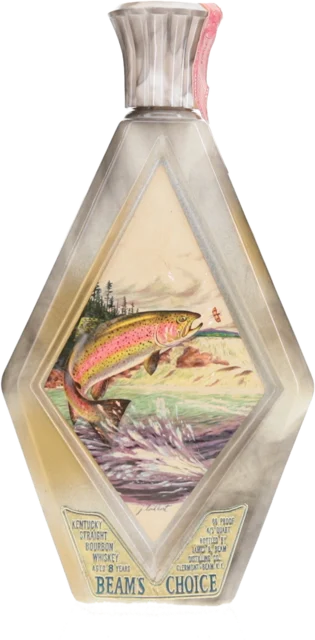

The same decanter can sell for $30 or $140. It depends on where it trades, and on six things you can check yourself.
Same Jim Beam Regal China piece, three very different prices.
Where the volume is, and where both the best deals and the worst rip-offs live.
Facebook collector groups, Reddit, private collector networks, flea markets, estate sales, swap meets and shows.
Public sale records, so you can see what a piece actually sold for.
Auction houses (Skinner, Morphy, Heritage), Baxus, established breweriana dealers, antique shops with provenance.
Vetted and legal in states like Ohio and Kentucky. The safest channel, at retail markup.
Licensed specialty retailers, regional whiskey shops with vintage stock, some Total Wine rare sections.
Check these before you buy or sell.
Full or near-full bottles carry a premium over empties.
Most were filled and sealed at issue. The liquid is often undrinkable now, but it shows a piece stored properly and never opened.
A missing stopper is the most common deduction.
Regal China ceramic stoppers break and get lost easily. An original stopper, especially with an unbroken foil or wax seal, commands a strong premium.
Can add roughly 30–60% to the value.
Boxes were usually thrown away, so boxed examples are genuinely scarce. Original paperwork or Bottle Club newsletters add more.
Chips, crazing, faded paint and kiln spots all cut value.
Knowing the series matters more than knowing the piece.
Jim Beam made over 1,500 designs from 1955 to 1992 (2,291 with colorways and variants). Early Executive and Political Figures pieces are scarce; common state bottles were made by the hundreds of thousands.
The more collector worlds a piece touches, the higher the price.
A classic-car decanter draws car collectors too; a political figure draws history collectors; a sports team draws memorabilia collectors.
What new collectors get wrong most often.
Licensed reseller prices are the ceiling. Estate sales and flea markets clear far lower.
A replaced or missing stopper cuts the value to a fraction. Ask, and check it's original to that model, not a generic swap.
A 1956 Executive Series piece and a 1984 common state bottle live in entirely different price tiers. Learn the series first.
Filter for sold, not active. Asking and clearing prices often differ by 50% or more on common pieces.
Empties still sell, especially rare or excellent-condition pieces, and they're the easiest way into collecting for display.
Year, mintage and guide value for 2,291 designs. Or send us photos and we'll help.
